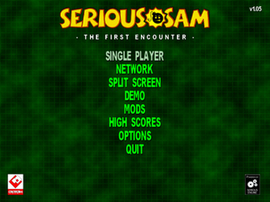
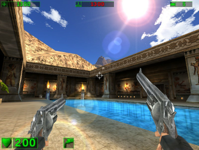

Serious Sam - The First Encounter
Dieser Artikel wurde für die folgenden Ubuntu-Versionen getestet:
Ubuntu 14.04 Trusty Tahr
Zum Verständnis dieses Artikels sind folgende Seiten hilfreich:
Serious Sam - The First Encounter  (TFE) ist ein Ego-Shooter aus dem Hause Croteam
(TFE) ist ein Ego-Shooter aus dem Hause Croteam  . Es wurde im Jahre 2001 veröffentlicht und ist der erste Titel einer Spieleserie. In der Rolle der Spielfigur Sam "Serious" Stone versucht man die Außerirdischen sowie deren Oberhaupt Mental davon abzuhalten, das Universum zu erobern und die Menschheit zu vernichten.
. Es wurde im Jahre 2001 veröffentlicht und ist der erste Titel einer Spieleserie. In der Rolle der Spielfigur Sam "Serious" Stone versucht man die Außerirdischen sowie deren Oberhaupt Mental davon abzuhalten, das Universum zu erobern und die Menschheit zu vernichten.
Die Fortsetzung Serious Sam - The Second Encounter, sowie Serious Sam II, sind ebenfalls unter Linux verfügbar.
|  |  |
| Hauptmenü | Spielszene |
Vorbereitung¶
GOG.com¶
Serious Sam - The First Encounter nach dem Erwerb aus der persönlichen Bibliothek herunterladen und unter Wine installieren [1].
Desura / Steam¶
Die Version, welche auf Desura erworben werden kann, ist nur unter Steam spielbar. Serious Sam Classic - The First Encounter unter Steam installieren [2].
Installation¶
Download - Version¶
Nachdem die Vorbereitungen getroffen wurden, den Ordner Serious Sam Classic The First Encounter aus dem Installationsverzeichnis nach ~/Spiele kopieren - im weiteren Verlauf Spieleverzeichnis genannt. Nun von liflg.org den Installer serious.sam.tfe_1.05beta3-english-2.run herunterladen, mit Ausführrechten ausstatten [3] und ausführen [4]:
./serious.sam.tfe_1.05beta3-english-2.run --noexec --keep
Im nächsten Schritt in den Ordner serious.sam.tfe_1.05beta3-english-2 wechseln. Die Archive bins.tar.bz2, SeriousSamPatch105_USA_linux.tar und das Icon ssam.xpm in das Spieleverzeichnis verschieben. Die beiden Archive dort entpacken [5]. Die Ordner Controls, Data, Help, Players, SaveGame, Scripts und temp werden aktualisiert.
Im Spieleverzeichnis in den Ordner Bin wechseln und das Spiel durch den Aufruf von ssam_lnx starten [6]. Auf Wunsch einen Menüeintrag [7] vornehmen.
CD-Version¶
Die Installationsroutine herunterladen, Ausführrechte [3] vergeben und die Installation einleiten:
sh serious.sam.tfe_1.05beta3-english.run
Das Spiel kann über ssamtfe gestartet [6] werden.
Hinweis:
Die Soundausgabe des Spiels funktioniert nicht.
Erweiterungen¶
Für das Spiel stehen einige Erweiterungen zur Verfügung, welche auf seriouszone.com  zu finden sind. Die Dateien sind in die folgenden Verzeichnisse zu kopieren:
zu finden sind. Die Dateien sind in die folgenden Verzeichnisse zu kopieren:
| Erweiterungen | ||
| Erweiterung | Beschreibung | Ort |
| Maps | Karte | .gro-Datei in das Installationsverzeichnis kopieren. |
| Models | Alernative Spielecharaktere. | .gro-Datei in das Installationsverzeichnis kopieren. |
| Mods | Modifikationen | Nach dem Entpacken in den Ordner Mods des Spiels kopieren. |
Konsole¶
Über F1 wird die Konsole geöffnet bzw. geschlossen.
| Cheats | |
| Code | Beschreibung |
/cht_bKillFinalBoss = 1; | Der Endgegner ist wg. eines Bugs nicht zu besiegen. Der Befehl schafft Abhilfe. |
cht_bGiveAll | Alle Gegenstände erhalten. |
cht_bFly | Flugmodus |
cht_bRefresh | Lebensenergie erneuern |
cht_bGod | Unverwundbarkeit |
cht_bInvisible | Unsichtbarkeit |
cht_bGhost | Durch Wände gehen |
Problembehebung¶
Absturz¶
Kommt es zu Abstürzen, kann man versuchen, das Spiel über die unter Bin vorhandene Datei ssam_lnx.dynamic zu starten. Sollte dies nicht funktionieren, kann man von Holarse die Datei ssam_lnx.dynamic-fix-ssamtfe für Serious Sam The First Encounter herunterladen und im Spielverzeichnis unter Bin abspeichern. Nachdem die Ausführrechte [3] vergeben wurden, kann das Spiel über ssam_lnx.dynamic-fix-ssamt* gestartet [6] werden.
Unter Ubuntu 13.04 wird kein Sound abgespielt. Die ebenfalls manchmal hohe Geschwindigkeit lässt sich durch Beenden und nochmaliges Starten beheben.
Tastenkürzel¶
| Tastenkürzel | |
| Taste(n) | Funktion |
| W + A + S + D | Sam steuern |
| Springen / Schwimmen | |
| F | Ducken / Tauschen |
Strg /  | Schießen |
| Alt + ⏎ | Vollbild- / Fenstermodus |
| F1 | Konsole |
| Esc | Menü |

- Erstellt mit Inyoka
-
 2004 – 2017 ubuntuusers.de • Einige Rechte vorbehalten
2004 – 2017 ubuntuusers.de • Einige Rechte vorbehalten
Lizenz • Kontakt • Datenschutz • Impressum • Serverstatus -
Serverhousing gespendet von